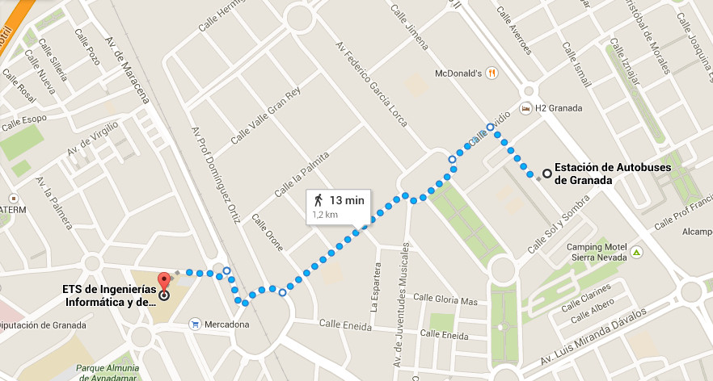
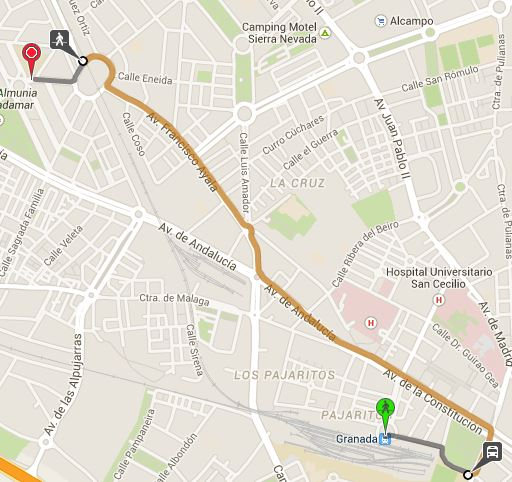
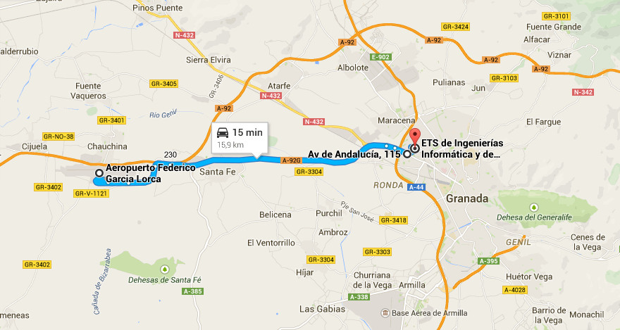

Trayecto desde la estación de autobuses
La mejor forma de llegar es a pie, está a 13 minutos andando (1.2 Kms):

Trayecto desde la estación de Renfe
La mejor forma de llegar es usando el transporte público (autobús) mediante la siguiente combinación (alrededor de 23 minutos):
-
Andar hasta Marín Ocete (alrededor de 7 minutos, 285 m.)
-
Coger autobús N3 (Cerrillo Maracena - Rector Marín Ocete) hasta Plaza de Europa (11 minutos)
-
Andar desde parada Plaza de Europa hasta la ETSIIT (alrededor de 4 minutos, 229 m.)
Trayecto desde el aeropuerto
La compañía encargada del servicio de autobuses Granada - Aeropuerto es Autocares Jose González.
En su primera parada desde el aeropuerto (15 minutos), sigue el trayecto hasta el punto blanco cercano a la facultad. Desde ahí hay que subir andando por la calle Periodista Eugenio Selles 450 m. (6 minutos) hasta la ETSIIT.
